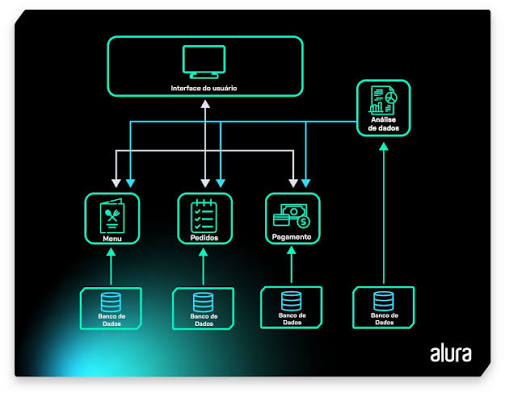

Interface de Usuário Orientada por Menu

O que é?
A Interface Orientada por Menu apresenta ao usuário uma lista organizada de opções. Em vez de digitar comandos, o usuário escolhe uma alternativa para executar uma ação, tornando a navegação simples e intuitiva.
Principais características
- Opções organizadas em menus.
- Navegação simples.
- Pouca necessidade de treinamento.
- Reduz erros de operação.
Vantagens
- Fácil utilização.
- Boa para iniciantes.
- Diminui erros do usuário.
- Aprendizagem rápida.
Desvantagens
- Pouca flexibilidade.
- Menus muito grandes dificultam a navegação.
- Pode exigir muitos cliques.
Exemplos
- Caixas eletrônicos (ATM).
- Menus de Smart TVs.
- Sistemas de autoatendimento.
- Menus de videogames.
- Painéis de impressoras.
Aplicações
Esse tipo de interface é utilizado em equipamentos públicos, sistemas bancários, restaurantes de autoatendimento, impressoras multifuncionais, aparelhos eletrônicos e diversos sistemas embarcados.
Resumo
Interfaces orientadas por menu oferecem simplicidade e segurança durante a navegação. São amplamente utilizadas quando o objetivo é reduzir erros e facilitar a interação de usuários com diferentes níveis de experiência.